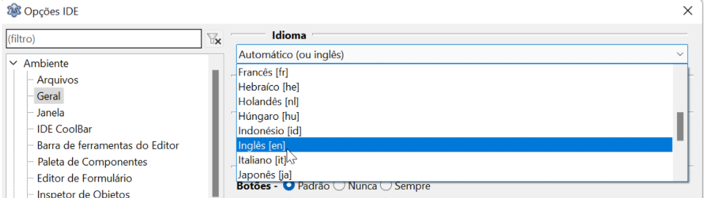

Escolhendo um idioma
A primeira coisa a ser decidida numa IDE é o idioma que será usado. Para os iniciantes, talvez seja mais fácil escolher o português, mas é uma zona de conforto perigosa. Ao procurar ajuda em fóruns e listas de discussão, você perceberá que muitos — especialmente programadores brasileiros — têm preferência pelo inglês.
Isso ocorre porque, em geral, a documentação é muito mais farta em inglês. Se desejamos progredir nesse ramo, devemos nos especializar em usar este idioma, tornando a escolha do idioma apropriado um passo importante para o seu amadurecimento técnico.
Para configurar, vá em: Tools | Options | Environment | General | Language

Confirme a alteração e depois reinicie o Lazarus para usufruir do idioma escolhido.
Nota: Se você optar por manter o português, não há problema imediato; apenas saiba que o domínio técnico do inglês facilitará muito o seu acesso a recursos avançados no futuro.